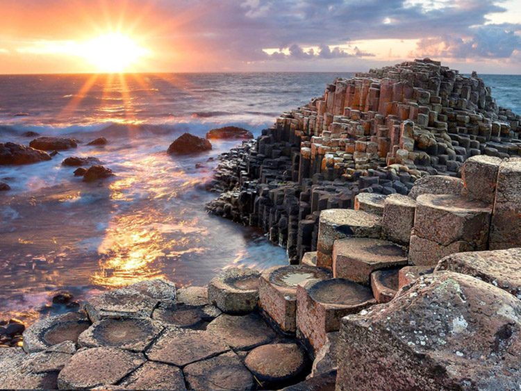

Những Địa Điểm Du Lịch 🛫
1.Đà Nẵng

Đà Nẵng là một thành phố trực thuộc trung ương, nằm trong vùng Duyên hải Nam Trung Bộ.
Là thành phố trung tâm và lớn nhất khu vực miền Trung - Tây Nguyên.
Thành phố Đà Nẵng là thành phố tổng hợp đa ngành, đa lĩnh vực; trung tâm chính trị - kinh tế - xã hội với vai trò là trung tâm công nghiệp, tài chính, du lịch, dịch vụ, văn hóa, giáo dục - đào tạo, y tế chất lượng cao, khoa học - công nghệ, khởi nghiệp, đổi mới sáng tạo của khu vực Miền Trung - Tây Nguyên và cả nước; trung tâm tổ chức các sự kiện tầm khu vực và quốc tế.
Đà Nẵng nằm ở vị trí trung độ của Việt Nam, có vị trí trọng yếu cả về kinh tế - xã hội và quốc phòng - an ninh của khu vực Miền Trung - Tây Nguyên và cả nước; là đô thị biển và đầu mối giao thông rất quan trọng về đường bộ, đường sắt, đường biển và đường hàng không.
Thành phố Đà Nẵng có địa hình, thiên nhiên đa dạng, có biển, bán đảo, vùng vịnh, đồi núi, sông, suối, đồng bằng phân bố trong lòng thành phố đóng góp vào phát triển kinh tế, du lịch.
Đà Nẵng là một thành phố có nhiều tiềm năng để phát triển du lịch, là trung tâm du lịch lớn hàng đầu của Việt Nam.
Phía bắc thành phố được bao bọc bởi núi cao với đèo Hải Vân được mệnh danh là "Thiên hạ đệ nhất hùng quan".
Những địa điểm du lịch nổi tiếng như : Bà Na Hills,...
Đà Nẵng đã xây dựng các sự kiện du lịch lớn, trong đó Lễ hội pháo hoa quốc tế Đà Nẵng DIFF được tổ chức liên tục từ năm 2008. Vào tháng 5 năm 2012, Đà Nẵng lần đầu triển khai Cuộc thi Dù bay Quốc tế.
Đà Nẵng được xem là một địa điểm du lịch của rất nhiều người từng ao ước được đi - vì sự đẹp đẽ và sang trọng của Thành Phố Đà Nẵng khiên ai cũng mê hoặc.
.jpg)
Bà Nà Hills
2.Phố Cổ Hội An

Hội An là một thành phố trực thuộc tỉnh Quảng Nam, Việt Nam.
Phố cổ Hội An từng là một thương cảng quốc tế sầm uất, gồm những di sản kiến trúc đã có từ hàng trăm năm trước, được UNESCO công nhận là di sản văn hóa thế giới từ năm 1999.
Thành phố Hội An nằm bên bờ bắc hạ lưu sông Thu Bồn. Hội An là một đô thị cổ của Việt Nam, cách Hà Nội 795 km về phía Nam, cách Thành phố Hồ Chí Minh 940 km, cách Huế 122 km, cách thành phố Đà Nẵng 30 km về phía đông nam
Hội An trở thành thành phố vào tháng 1 năm 2008 trên cơ sở toàn bộ diện tích tự nhiên, dân số và các đơn vị hành chính trực thuộc của thị xã Hội An, với 6.148 ha, 122.000 nhân khẩu.
Hiện nay trên địa bàn thành phố Hội An đã và đang hình thành một số khu đô thị mới như khu đô thị Time Hoi An, khu đô thị New Hoi An City, khu đô thị Trảng Kèo...
Hiện nay chính quyền sở tại đang tích cực khôi phục các di tích, đồng thời phát triển thành một thành phố du lịch.
Những địa điểm du lịch nổi tiếng ở Hội An như : Cù Lao Chàm,..
Với lịch sử phát triển lâu dài của mình, các cư dân sinh sống ở Hội An đã dần dần phát triển những ngành nghề đa dạng như nghề mộc, làm gốm mỹ nghệ, trồng rau, nghề thuốc, làm lồng đèn.... để phục vụ nhu cầu đời sống của mình, đồng thời cũng làm nên sự phồn thịnh, tấp nập cho cảng thị Hội An từ thế kỷ XVII đến cuối thế kỷ XVIII, đầu thế kỷ XIX.
Thành Phố Hội An - Phố Cổ Hội An là một trong những địa điểm vô cùng nổi tiếng ở miền trung bởi những nét cổ xưa và đẹp đẽ khiến bao nhiêu người dân muốn đi tham quan thử - tuy đã được truyền lâu dài nhưng Hội An vẫn chưa bao giờ mất đi giá trị văn hóa - bản sắc dân tộc .
Cù Lao Chàm
3.Phong Nha - Kẻ Bàng(Quảng Bình)

Vườn quốc gia Phong Nha – Kẻ Bàng là một vườn quốc gia của Việt Nam, nằm tại huyện Bố Trạch và Minh Hóa, tỉnh Quảng Bình, cách thành phố Đồng Hới khoảng 50 km về phía Tây Bắc, cách thủ đô Hà Nội khoảng 500 km về phía nam.
Vườn quốc gia này giáp khu bảo tồn thiên nhiên Hin Namno ở tỉnh Khammouan, Lào về phía tây; cách Biển Đông 42 km về phía đông kể từ đường biên giới của vườn quốc gia này.
Trải qua nhiều thay đổi lớn về địa tầng và địa mạo, địa hình khu vực này hết sức phức tạp.
Phong Nha-Kẻ Bàng phô diễn các bằng chứng ấn tượng về lịch sử Trái Đất, giúp nghiên cứu lịch sử hiểu được lịch sử địa chất và địa hình của khu vực[
Khu vực Phong Nha-Kẻ Bàng là một trong những mẫu hình riêng biệt và đẹp về sự kiến tạo các-xtơ phức tạp ở Đông Nam Á.
Được UNESCO công nhận là Di sản thiên nhiên thế giới theo tiêu chí địa chất, địa mạo năm 2003, và được UNESCO công nhận lần 2 là Di sản thiên nhiên thế giới với tiêu chí đa dạng sinh học, sinh thái vào ngày 3 tháng 7 năm 2015.
Khách du lịch tham quan hang động mua vé tham quan bao gồm cả chi phí ca nô, vé vào cửa.
Khách được ca nô chở ngược theo sông Son đến thăm động Tiên Sơn và động Phong Nha.
Những địa điểm du lịch như : Sông Chày Hang Tối,...
Ngoài ra còn có tua du lịch sinh thái riêng.
Vườn quốc gia Phong Nha – Kẻ Bàng một địa điểm lý tưởng cho những người đam mê về cái đẹp tự nhiên bởi những ngọn núi và phong cảnh đẹp tuyệt trần - dù hông mang lại nhiều nổi tiếng như những địa điểm khác nhưng nơi đây luôn chứa đựng những cái cảnh đẹp mà ai cũng muốn tận hưởng .
Sông Chày Hang Tối
4. Đảo Lý Sơn (Quảng Ngãi)
Đảo Lý Sơn (Quảng Ngãi) là một huyện đảo thuộc tỉnh Quảng Ngãi, Việt Nam.
Trước đây, Lý Sơn được gọi là Cù lao Ré, theo cách lý giải của dân gian là “cù lao có nhiều cây Ré”.
Hòn đảo là vết tích còn lại của một núi lửa với 5 miệng, được hình thành cách đây khoảng 25-30 triệu năm.
5 ngọn núi là nguồn giữ các mạch nước ngầm chính cung cấp nguồn nước cho toàn bộ người dân trên đảo.
Huyện Lý Sơn là huyện đảo được tách ra từ huyện Bình Sơn của tỉnh Quảng Ngãi theo quyết định của Thủ tướng Chính phủ Việt Nam năm 1992 và trở thành huyện đảo tiền tiêu từ khi đó.
Huyện đảo nằm về phía đông bắc tỉnh Quảng Ngãi, cách đất liền 15 hải lý.
Tỉnh Quảng Ngãi đã khai trương tuyến du lịch "biển đảo Lý Sơn" vào ngày 28 tháng 4 năm 2007.
Du khách từ thành phố Quảng Ngãi đi theo quốc lộ 24B về cảng Sa Kỳ, sau đó ra đảo bằng tàu cao tốc và thuê xe máy để đến các di tích trên đảo. Khi lưu trú trên đảo, du khách sẽ được thưởng thức các món hải sản và các đặc sản gỏi tỏi, gỏi cá cơm, rong biển trộn (rau cum cúm), cháo nhum (cầu gai)..
Từ đảo lớn khách du lịch lại có thể đi cano sang đảo bé để tắm và bơi tại bãi dừa. Nước biển tại đây trong và sóng lặng.
Những địa điểm du lịch như : Hòn Mù Cu Lý Sơn,...
Huyện đảo được mệnh danh là "Vương quốc tỏi" vì sản phẩm tỏi có hương vị đặc biệt. Các hàm lượng chất có trong tỏi luôn cao hơn tỏi được trồng ở những nơi khác.
Đảo Lý Sơn là một huyện đảo chưa nhiều người đặt chân đến và cũng không ít người muốn đi thử - bởi sự đẹp đẽ và khí hậu mát mẻ do gần biển mà làm cho Lý Sơn trở nên nổi tiếng khiến nhiều người cũng muốn lui tới , trải nghiệm thử .
Hòn Mù Cu Lý Sơn
5.Đảo Bình Ba (Khánh Hòa)
Đảo Bình Ba (Khánh Hòa) là một đảo san hô thuộc cụm Nam Yết của quần đảo Trường Sa.
Đảo này nằm cách đảo Sơn Ca 6,2 hải lý (11,5 km) về phía tây và cách đảo Nam Yết khoảng 11 hải lý (20,4 km) về phía đông bắc.
Đây là đảo có diện tích tự nhiên lớn nhất của quần đảo Trường Sa.
Đảo Ba Bình là đối tượng, thực thể địa lý tranh chấp giữa Việt Nam, Đài Loan, Philippines và Trung Quốc. Hiện tại, Đài Loan đang duy trì sự kiểm soát đối với toàn bộ hòn đảo này.
Đảo Bình Ba là một trong Tứ Bình (đảo Bình Hưng, bãi biển Bình Lập, Bình Tiên và đảo Bình Ba - khu du lịch biển còn mang vẻ đẹp hoang sơ ở Khánh Hòa, còn được mệnh danh là Maldives của Việt Nam hay đảo tôm hùm).
Bình Ba có phong cảnh đẹp và các bãi cát trắng trải dài.
Đảo có ba bãi biển đẹp nhất là bãi Chướng (nhiều đá, nước trong), bãi Nồm (cát trắng, nơi dân địa phương hay ra tắm) và bãi Nhà Cũ (có nhiều cầu gai).Những địa điểm du lịch như : Đồi cỏ lau,...
Một số địa điểm thu hút khách du lịch là lăng Ngũ Hành và đình làng Bình Ba.
Đảo Bình Ba thuộc những địa điểm du lịch lý tưởng của rất nhiều người - với một hòn đảo được bao bọc bởi biển khiến cho nơi đơi có khí hậu vô cùng mát mẻ và tạo nhiều sự lãng mạng của những cặp đôi cùng đi du lịch .

Đồi cỏ lau
6.Vịnh Vân Phong (Khánh Hòa)
Vịnh Vân Phong (Khánh Hòa) là vịnh biển lớn nhất của tỉnh Khánh Hòa, Việt Nam.
Khu du lịch mũi Đại Lãnh của vịnh thuộc danh sách các khu du lịch quốc gia trọng điểm , đây là tập hợp của nhiều đảo và vũng vịnh nhỏ.
Vịnh Vân Phong có 3 khu vực chính là đảo Cổ Cò (thuộc bán đảo Đầm Môn), đảo Bến Gỏi và bán đảo Hòn Khói.
Theo đánh giá của nhiều chuyên gia Liên Hợp Quốc và các nhà nghiên cứu đầu tư phát triển thì Vân Phong là vùng vịnh có tiềm năng phát triển du lịch sinh thái hàng đầu châu Á.
Các chuyên gia của Hiệp hội Du lịch Thế giới (OMT), Chương trình Phát triển du lịch Liên Hợp Quốc (PNUD) và Viện Nghiên cứu Phát triển Du lịch Việt Nam (IRDT) cùng thừa nhận rằng: nơi đây có đủ các điều kiện tối ưu để phát triển du lịch.
Trong dự án VIE89/003, OMT ghi rõ: "Bán đảo vịnh Vân Phong, là một trong những thắng cảnh nghỉ ngơi đẹp nhất trong khu vực Châu Á và Viễn Đông, vượt xa Phuket (Thái Lan) và có thể so sánh được với bãi biển tuyệt mỹ ở Sierra Leone (châu Phi).
Vịnh Vân Phong là một trong những nguồn dự trữ của ngành du lịch nghỉ ngơi nhiệt đới...".
Khu du lịch mũi Đại Lãnh của vịnh thuộc danh sách các khu du lịch quốc gia trọng điểm.
Vịnh Vân Phong là khu du lịch quốc gia trọng điểm của Miền Trung nói riêng và Việt Nam nói chung - dù là một địa điểm không nhiều người biết tới như Vịnh Vân Phong vẫn tạo nên cái vẻ đẹp riêng thu hút khách du lịch đến chiêm ngưỡng.
7.Mũi Né (Phan Thiết)
Mũi Né (Phan Thiết) là một địa danh, tên một mũi biển và cũng là một phường ở thành phố Phan Thiết, tỉnh Bình Thuận, Việt Nam. Đây là một khu du lịch nổi tiếng của tỉnh Bình Thuận và là một trong số các khu du lịch quốc gia của Việt Nam (tuy nhiên, thực tế đa phần các khu nghỉ mát lại tập trung nhiều ở phường Hàm Tiến, gần Mũi Né).
Về hành chính, toàn bộ khu vực ven biển từ Mũi Né lên đến Hòn Rơm nằm cách đó khoảng 7 km là phường Mũi Né thuộc thành phố Phan Thiết.
Từ một dải bờ biển hoang vu với các đồi cát đỏ như sa mạc nằm rất xa đường giao thông, chỉ có lác đác vài xóm chài nghèo, Mũi Né đã mọc lên hàng trăm khu resort.
Khi đến Mũi Né, du khách sẽ có thể được tham quan làng chài Mũi Né, có cơ hội chứng kiến được hoạt động của một làng chài xứ biển thuần chất Việt Nam.
Từ nội thành Phan Thiết ra Mũi Né khoảng 22 km, có nhiều di tích, danh lam thắng cảnh, nơi tham quan nằm rải rác trên đường. Bạn có thể dễ dàng tìm ra hơn chục resort, danh lam di tích nổi tiếng.
Việc tập trung như thế này khiến cho đường ra Mũi Né thêm phần hấp dẫn, thú vị.Những địa điểm du lịch như : Hải đăng Kê Gà,...
Mũi Né là một khu du lịch khá là quen thuộc đối với nhiều người dân trên Việt Nam - đồng thời cũng là một nơi lý tưởng để nghỉ dưỡng hay trải nghiệm biển Mũi Né như nào , kéo dài qua nhiều thời gian nhưng nơi đây chưa từng là địa điểm du lịch mà không ai không muốn đi thử .
Hải đăng Kê Gà
8.Gành Đá Đĩa (Phú Yên)

Gành Đá Đĩa (Phú Yên) là một danh thắng thiên nhiên tại xã An Ninh Đông, huyện Tuy An, tỉnh Phú Yên, Việt Nam.
Địa điểm này là một đoạn bờ biển có các cột đá bazan hình lăng trụ, trông giống như những chiếc đĩa xếp chồng lên nhau.
Theo các nghiên cứu, bazan tại khu vực này hình thành do hoạt động phun trào của núi lửa tại vùng trung tâm tỉnh Phú Yên (cao nguyên Vân Hòa ngày nay) cách đây hàng triệu năm. Các dòng dung nham khi nguội dần thì đông cứng lại và nứt vỡ thành các cột đá hình lăng trụ tương đối đồng đều.
Những cột đá nằm sát biển sau đó lại chịu tác động của sóng đánh vào nên tiếp tục nứt theo chiều ngang, tạo thành các "đĩa" đá.
Khu vực chính của danh thắng Gành Đá Đĩa có diện tích khoảng 2.700 m², các cột đá bazan tại đây tạo thành hai mũi nhô ra biển.
Ở rìa phía tây nam của danh thắng có Lăng Đá Đĩa thờ cúng thần Nam Hải (tức Cá Ông) của ngư dân trong vùng, được xây dựng vào khoảng giữa thế kỷ 19 dưới thời vua Tự Đức.
Một đặc điểm thu hút khách du lịch và cả các nhà nhiếp ảnh là những đám tảo biển nhìn như những bông hoa với nhiều sắc màu đẹp lung linh.
Muốn ghi hình lại “Những cánh hoa tảo biển”, du khách phải đi từ rất sớm, khi nước chưa dâng lên cao.
Gành Đá Đĩa nơi du lịch mang nhiều sự sáng tạo tự nhiên thật phong phú bởi những ngọn đá được xếp tầng với nhau thật táo bạo - đi kèm với nó là một bãi biển vô cùng trong cùng với khí hậu mát mẻ khiển nhiều người cũng muốn chiêm ngưỡng.
9.Đảo Phú Quý (Bình Thuận)
Đảo Phú Quý (Bình Thuận) là một huyện đảo thuộc tỉnh Bình Thuận, vùng Duyên hải Nam Trung Bộ, Việt Nam và là một quần đảo gồm 12 đảo lớn nhỏ, là hệ thống đảo ở cực Nam Trung Bộ.
Địa hình trên đảo tương đối bằng phẳng, thuộc dạng gò đồi, độ phân cắt yếu, nhưng vẫn thể hiện tính phân bậc khá rõ ràng. Ngoài 3 ngọn núi cao 108m, 86 m và 46 m, ở trung tâm đảo có những dãy đồi cao 20 - 30 m, 15 - 20 m, còn ven đảo thường cao khoảng 5m, đến 7 - 8m, thấp nhất khoảng 2m.
Thềm biển phổ biến có độ cao 4m và 2m, cũng phát triển nhiều bãi cát, doi cát, là các bãi tắm đẹp.
Nhiều lạch, mũi đá nhô ra biển tạo nên đường bờ đảo đa dạng về hình thái
Tuy là một hòn đảo nằm biệt lập giữa trùng dương nhưng dấu tích phát hiện được cho thấy đảo đã được khai phá tạo nên cuộc sống ở đảo từ rất sớm.
Trong quá trình khai thác đá quánh, nhân dân đã tìm thấy những mộ vò lớn.
Trải qua những biến thiên của lịch sử, Phú Quý là nơi hội tụ của nhiều luồng dân di cư từ lục địa ra với nhiều thành phần dân tộc khác nhau.
Trong đó người Kinh đóng vai trò chủ thể. Cùng với người Kinh, một số người Hoa cũng hòa nhập vào cộng đồng cư dân ở Phú Quý.
Những địa điểm du lịch như : Đồi điện gió,...
Đảo Phú Quý đã trở thành điểm du lịch thu hút khách bởi những bãi biển cát trắng đẹp tuyệt trần, những khung cảnh bình yên và hết sức thanh tĩnh và hoang sơ.
Hòn đảo này may mắn được thiên nhiên ưu đãi những cảnh sắc tuyệt đẹp.
Đồi điện gió
10.Thừa Thiên Huế (Huế)
Thừa Thiên Huế (Huế) là một tỉnh ven biển nằm ở cực nam của vùng Bắc Trung Bộ, miền Trung, Việt Nam.
Tỉnh Thừa Thiên Huế nằm ở dải đất ven biển miền Trung Việt Nam, thuộc Bắc Trung Bộ, bao gồm phần đất liền và phần lãnh hải thuộc thềm lục địa biển Đông.
Thừa Thiên Huế là trung tâm văn hoá lớn và đặc sắc của Việt Nam.
Thừa Thiên Huế có 5 danh hiệu UNESCO (1 di sản văn hoá thế giới, 1 di sản văn hóa phi vật thể, 3 di sản tư liệu thế giới).
Thừa Thiên Huế, Thuận Hóa - Phú Xuân - Huế là vùng đất có lịch sử lâu đời. Những phát hiện khảo cổ học gần đây cho thấy rõ dấu vết của người xưa trên mảnh đất này.
Hiện nay, tỉnh đang xây dựng môi trường văn hoá lành mạnh, đậm đà bản sắc văn hoá dân tộc và bản sắc văn hoá Huế gắn với bảo tồn, phát huy giá trị các di sản văn hoá truyền thống, là khâu đột phá để phát triển du lịch.
Nghiên cứu, từng bước hoàn thiện bản sắc văn hoá Huế, đặc trưng văn hoá Huế để xây dựng Huế trở thành trung tâm văn hoá đặc sắc của Việt Nam;
xem đây là lợi thế so sánh lâu dài để phát triển Huế, làm cho Huế ngày càng đặc sắc, thúc đẩy các ngành du lịch, dịch vụ phát triển.Những địa điểm du lịch Huế như : Sông Hương,...
Thừa Thiên Huế từ lâu đã được biết đến là một trung tâm giáo dục đào tạo lớn của khu vực miền trung và cả nước. Cùng với nó cũng là một địa điểm tham quan hay du lịch cho nhiều người , đem đến cho nhiều người về cái nhìn đẹp đẽ bởi những ngôi chùa , những cái đẹp được truyền lâu đời của Huế - khiến nhiều người cũng phải đến để chiêm ngưỡng.

Sông Hương